Custom art.
A lot of heart.
I’m Jordan Williams, the artist behind JAW Creations. I create hand-drawn designs, custom artwork, and handmade keepsakes for Leitchfield, Clarkson, Caneyville, and nearby Grayson County communities. From a painted storefront to a stitched little keepsake, let’s make it yours.
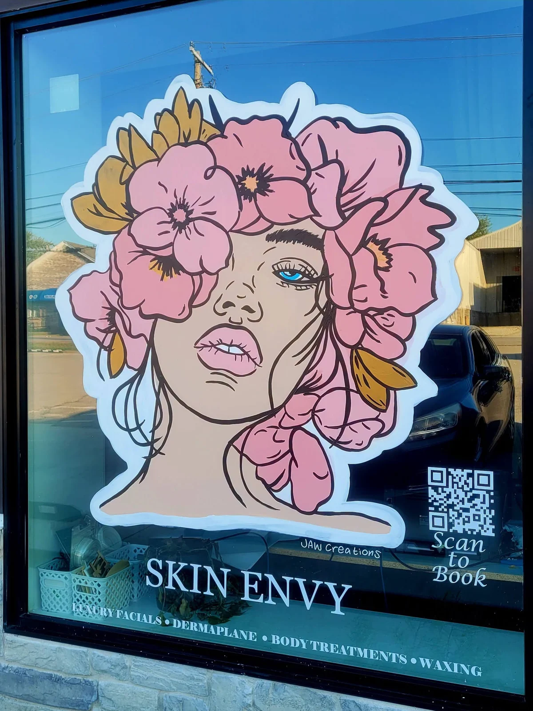
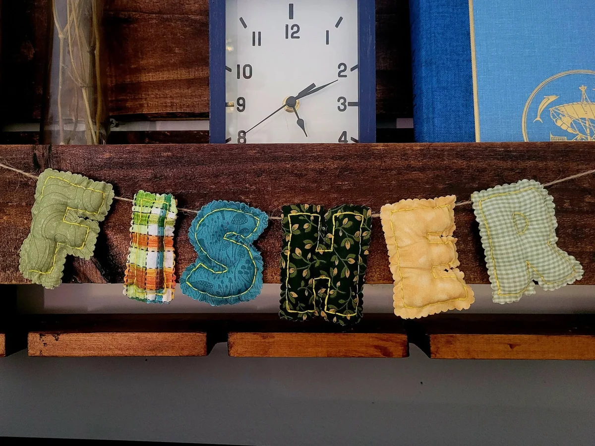
One creator, many canvases.
A few of my
artistic whims.
Custom illustration, handmade details, window painting, and a little Kentucky school spirit. Browse Jordan’s artwork for inspiration for your own commission.
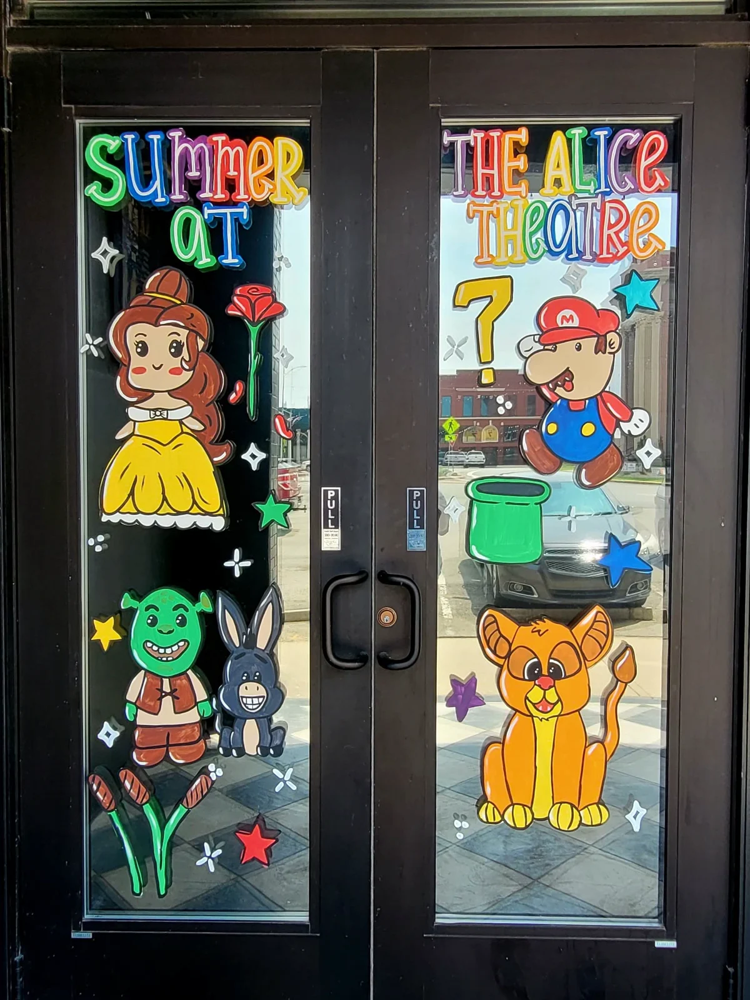
Summer at The Alice Theatre
Storefront window painting
Little letters, big personality
Handmade fabric name banner
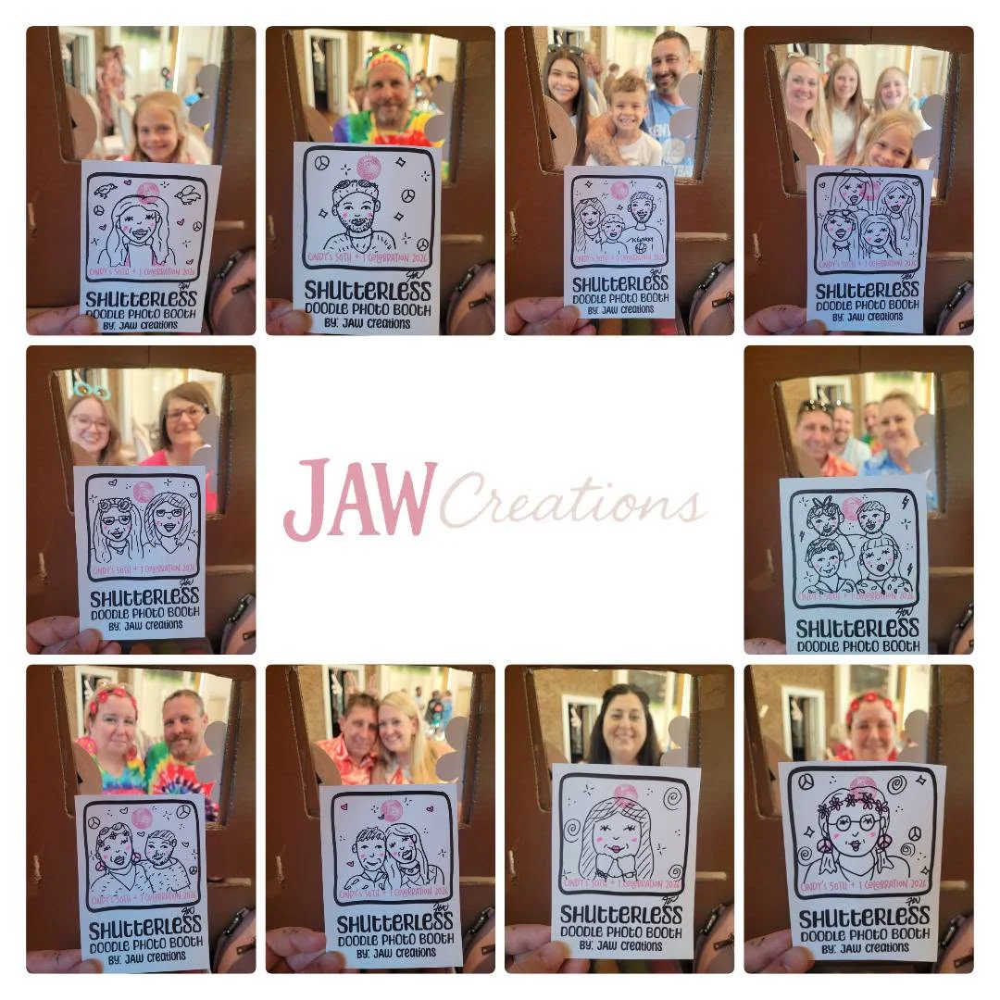
A portrait with a playful twist
Hand-drawn doodle portraits
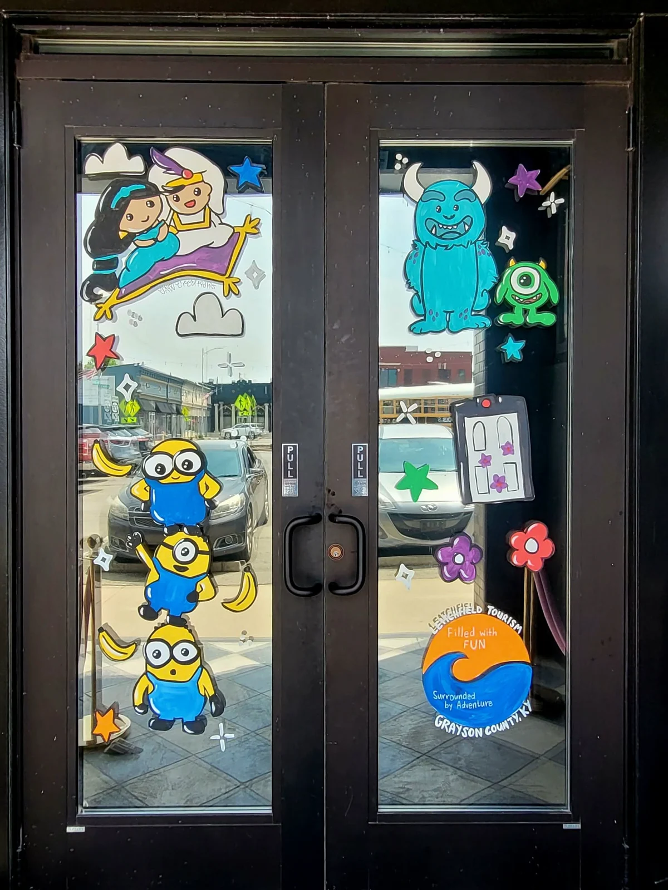
A colorful Leitchfield welcome
Storefront window painting
A window worth a second look
Window painting
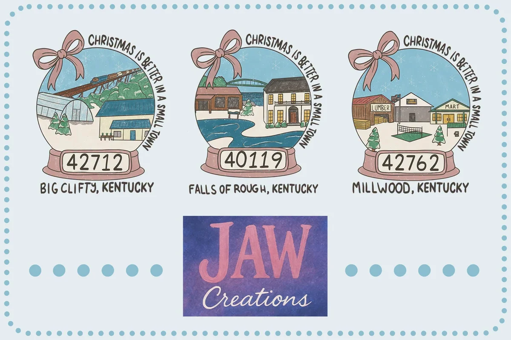
A little hometown Christmas
Custom illustration
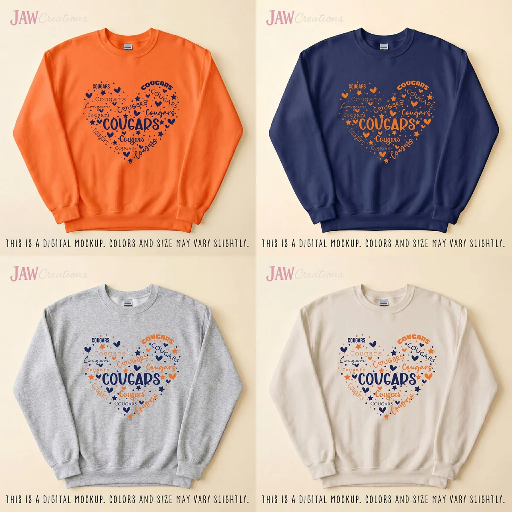
Cougars, with love
Apparel design · digital mockup
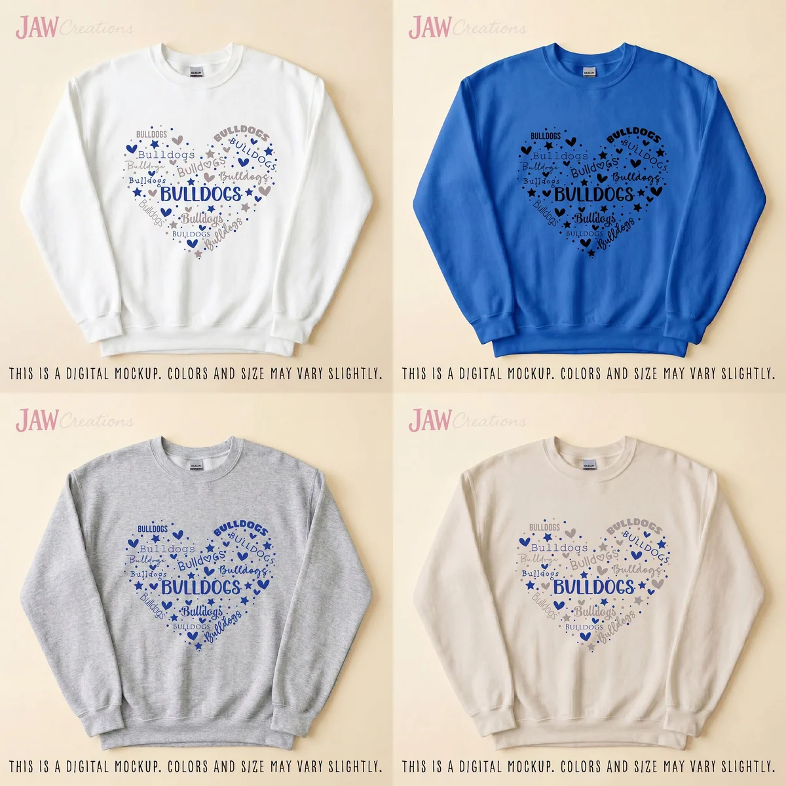
Bulldog pride
Apparel design · digital mockup
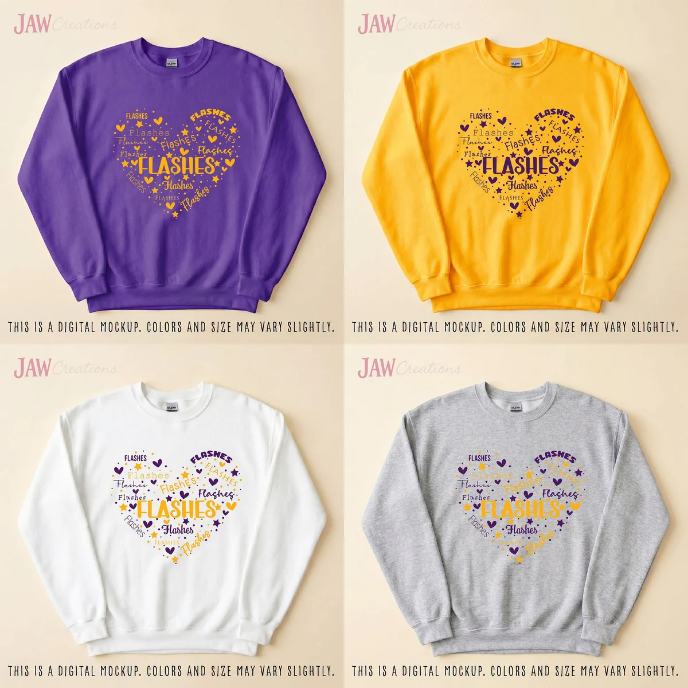
A flash of school spirit
Apparel design · digital mockup
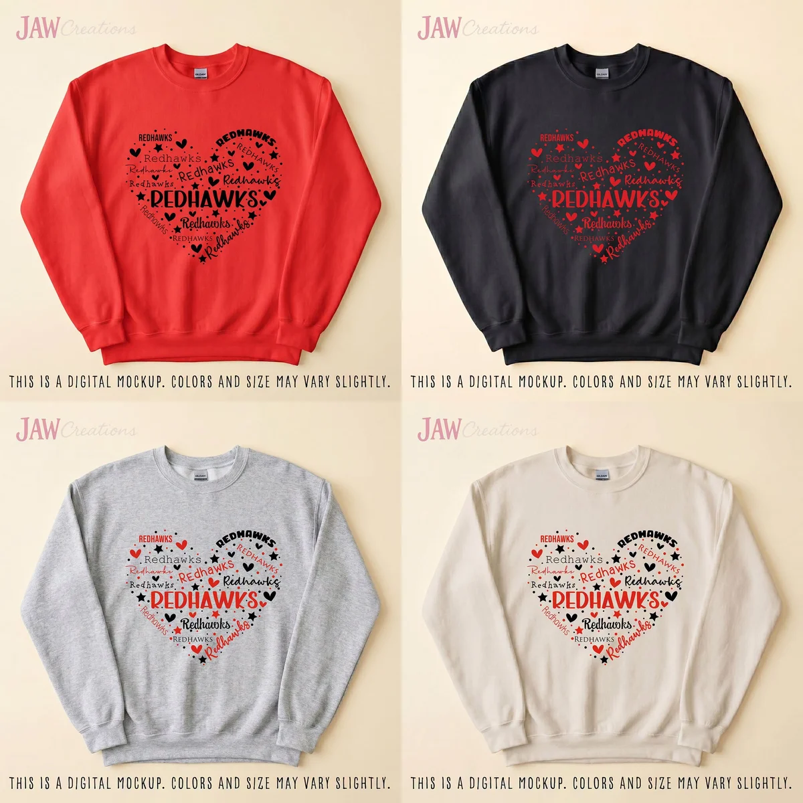
All heart for the Redhawks
Apparel design · digital mockup
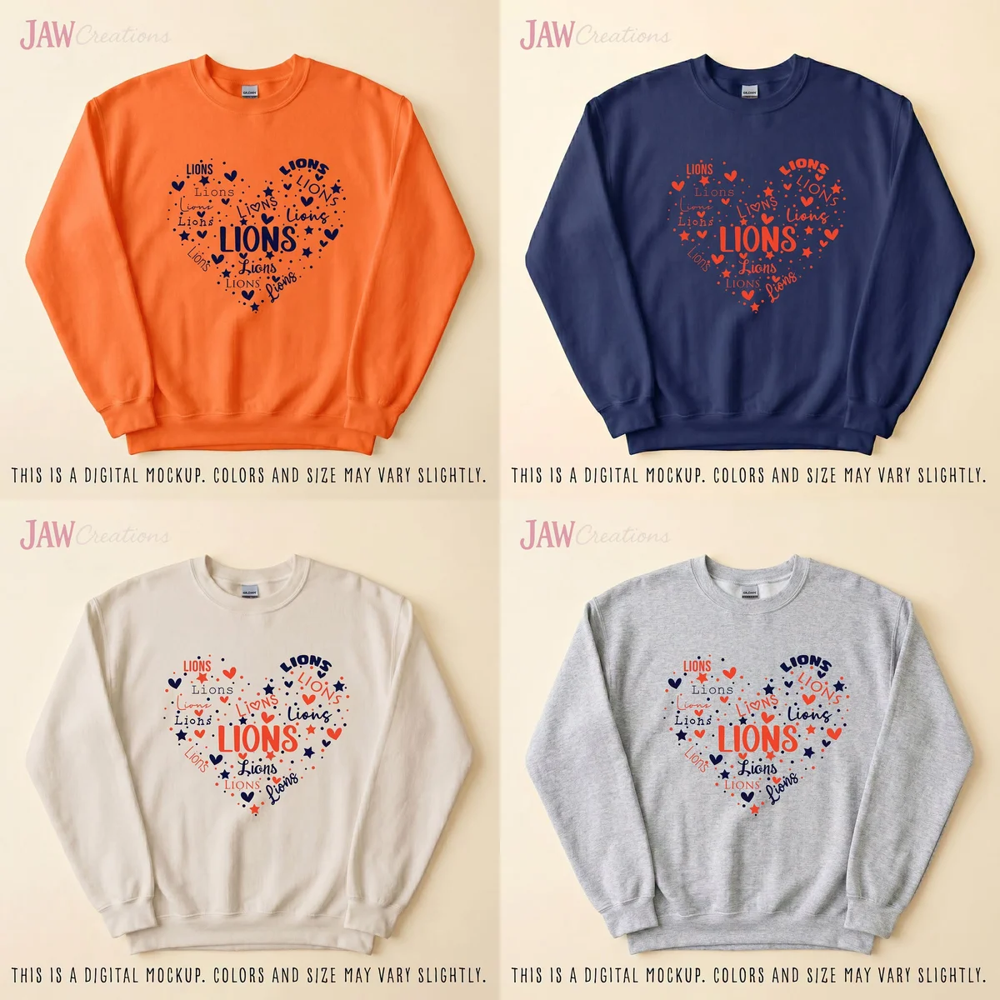
Made for the Lions
Apparel design · digital mockup
These are examples of my work, rather than a list of ready-to-ship items. Apparel images are digital mockups; colors and sizing can vary. Ask me about your own version.
Your idea.
My happy place.
A gift with a story. A reason to celebrate. A blank wall that needs some life. There’s more than one way to make it personal.
Tell me what you’re imagining- Custom embroidery & handmade details
- Personal touches in thread, fabric name banners, and keepsakes made with care.
- Custom banners & celebrations
- Personalized banners for birthdays, celebrations, and gatherings that deserve their own creative touch.
- Hand-drawn designs, stickers & prints
- Custom illustration and original artwork for the places, people, and little things you love.
- Painting, window art & murals
- Custom canvas paintings, storefront window painting, and murals for a bigger blank space. Tell me about your location and idea.
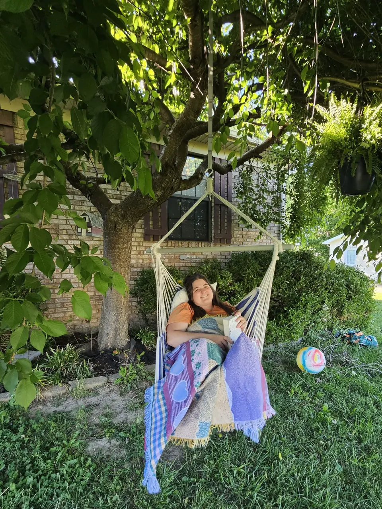
Hi, I’m Jordan.
I’ve always been
a maker.
Fourteen years ago, I started a little side hustle in my apartment called JW Crafts. I sold handmade jewelry, paintings, and whatever else sparked my interest.
That little business became Sew to Vinyl, Modern Mom Photography, Modern Goddess Boudoir, Modern Mom Studio, Jordan’s Artistic Whims, and eventually JAW Creations. Some seasons were all about photography. Others were full of crafting or custom shirts.
The names and mediums have changed. The love of making things has been there through all of it.
“Creating is a part of me I hope to never let go of.”
Jordan
Custom artwork for Leitchfield & Grayson County.
Looking for a local artist to bring a personal idea to life? JAW Creations works with people and small businesses in Leitchfield, Clarkson, Caneyville, and nearby Kentucky communities.
From custom drawings and embroidered keepsakes to celebration banners and business window art, every project starts with a conversation about what you have in mind.
Find JAW Creations on GoogleQuestions about custom artwork
Who is the artist behind JAW Creations?
Jordan Williams is the artist behind JAW Creations, also known as Jordan’s Artistic Whims. She creates custom artwork and handmade designs for Leitchfield and surrounding Grayson County communities.
What kinds of custom artwork can I request?
JAW Creations offers custom hand-drawn designs, illustration, embroidery, paintings, personalized banners, stickers, prints, window art, and murals. Share your idea with Jordan to discuss the right medium for your project.
Do you serve Clarkson and Caneyville as well as Leitchfield?
Yes. Leitchfield, Kentucky is the main service area, along with Clarkson, Caneyville, and nearby Grayson County communities. For window painting or mural work, include the project location when you get in touch.
How do I request a custom design or commission?
Email bannersbyjawcreations@gmail.com, call (270) 287-2382, or message JAW Creations on Facebook. Include the type of artwork, size, colors, inspiration, preferred date, and budget if you have one.
How much does custom artwork cost?
Custom projects vary by the type of artwork, size, and detail involved. Contact Jordan with your idea to discuss pricing and current availability before making plans.
Got a whim?
Let’s make
it yours.
A fully formed idea or just the beginning of one, I’d love to hear it. Send me a little about what you have in mind.
Email Jordan about a projectOpens your email app with a few prompts to get you started.
Tell me the little details.
What are we making? Share your theme, colors, size, inspiration photos, and any date you have in mind.
We’ll talk through your idea.
I’ll help work out the creative details. Ask about pricing, timing, and what’s possible for your project.
Make something that feels like you.
A personal gift, a special occasion, or something just because. The best part is making it yours.